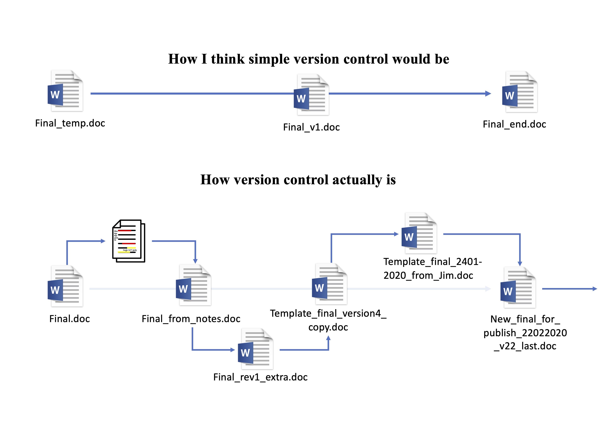
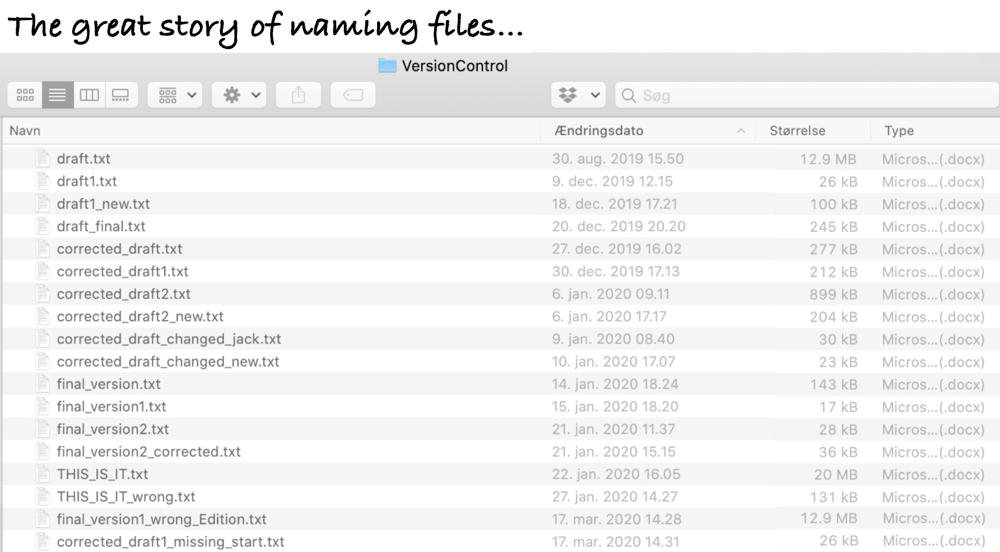
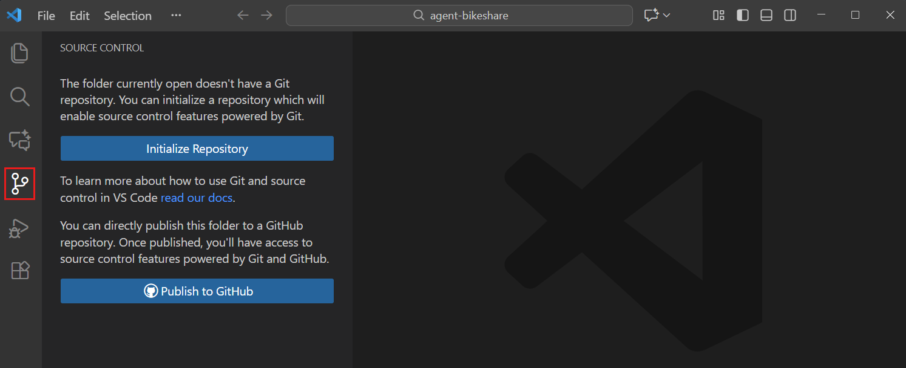
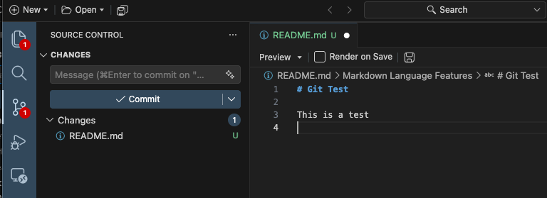
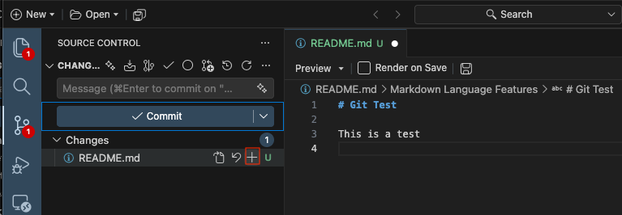
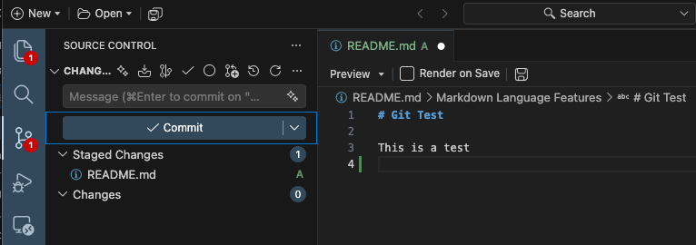
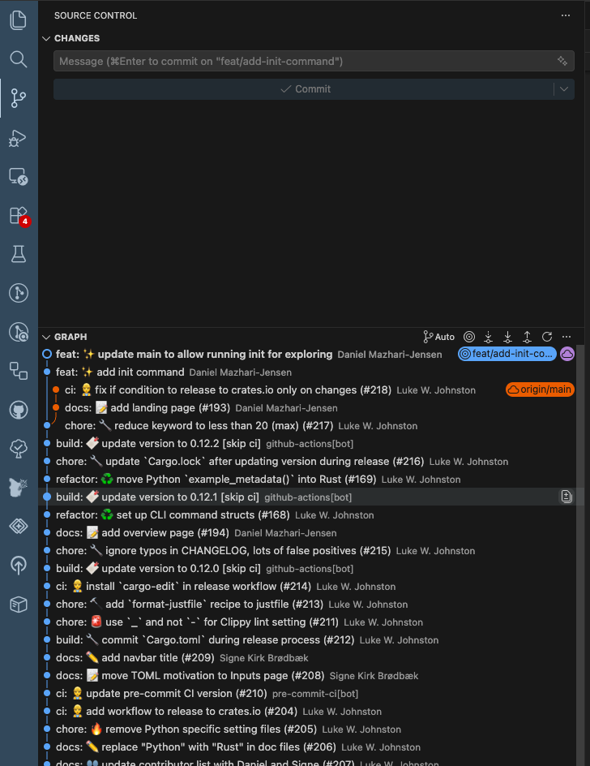
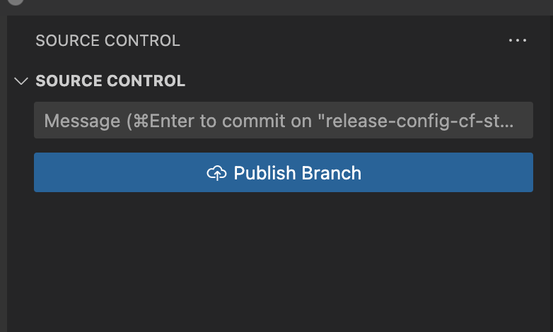

%%{init:{'themeCSS': ".actor {stroke: DarkBlue;fill: White;stroke-width:1.5px;}", 'sequence':{'mirrorActors': false}}}%%
sequenceDiagram
participant W as Working folder
participant S as Staged
participant H as History
W->>S: Add
S->>H: Commit
Version control in VSCode
Git and GitHub intro in VSCode
Git
GitHub
VSCode
A translation of the R3 Git and GitHub intro lectures.
This material is a translation from Reproducible Research in R, which used R and RStudio. See the material at Zenodo and
Johnston, L., Juel, H. B., Lengger, B., Witte, D. R., Chatwin, H., Christiansen, M. R., & Isaksen, A. A. (2021). r-cubed: Guiding the overwhelmed scientist from random wrangling to Reproducible Research in R. Journal of Open Source Education, 4(44).
Pre-lecture material:
Install Git
Windows users tend to have more trouble with installing Git than macOS or Linux users. See the section on Installing Git for Windows for help.
Make a GitHub account
After you are done, you need to create a GitHub account. Remember or record your username, as we will ask you for it in the pre-workshop survey. Make sure to remember your password, ideally saving it in your password manager if you installed one already or during the pre-workshop tasks so that it can store your password for you.
Now you’re ready to learn Git and GitHub! See you at the lecture 🎉
Version control with Git
Tracking what changes have been made to your files is an incredibly useful tool for managing your analysis project. It also makes it much easier to collaborate with others (like yourself in the future) and to share your work. Sharing your analysis code is a critical step in ensuring your research is reproducible. This session will cover what version control is and how to do it using Git within VSCode.
Reading task: What is version control?
NoteInstructor note
For the reading parts, let them read it first and then walk through the material again, to reinforce the importance of version control and doing it formally. So give them a heads up that you’ll be repeating things, specifically to reinforce the concepts.
It’s important in this session to go slowly. Version control is a challenging topic and isn’t something most people have ever learned about or dealt with. So take it slow and make sure everyone is on the same page. Frequently to assess how everyone is doing.
Time: ~8 minutes
Warning
This session is very text and reading heavy compared to other sessions. This is mostly because this topic requires a mental paradigm shift in how you view files, and requires you to change your habits of how you normally work. Knowing and using version control concepts and tools will fundamentally change how you work over the long term. While the concepts are quite difficult, the tools to use the concepts aren’t, and using them often will make the concepts easier to understand.


Does this way of saving files and keeping track of versions look familiar? While the above images are teasing a bit, there is truth to it: It is the most commonly used “version control”.
This form of version control, while common, is fairly primitive, informal, and very manual. It isn’t ideal because it requires making multiple copies of the same file, even if changes are made to only one small part of the file. This approach also makes it difficult to find specific changes.
There are, however, formal version control systems that automatically manage changes to a file or files. These formal version control systems take snapshots of changes done to files, which are usually called “revisions” or “commits”. These “commits” record what was changed since the previous “commit”. When you make these “commits”, you have to create a short message on what or why you made a change. These “commits” and their messages are stored as a log entry in a history. This history then has all this information, for each commit, on which file or files were changed, what was changed within the file(s), who changed it, and a short message about the change. This is extremely useful, especially when working in teams, or for yourself 6 months in the future (because you will forget things), since you can go back and quickly see what happened and why.
To understand how incredibly powerful version control is, think about these questions:
- How many files of different versions of a scientific documents or thesis do you have laying around after getting feedback from your supervisor or co-authors?
- Have you ever wanted to experiment with your code or your report and need to make a new file so that the original is not modified?
- Have you ever deleted something and wish you hadn’t?
- Have you ever forgotten what you were doing on a project, or why you chose a particular strategy or analysis?
All these problems can be fixed by using formal version control! There are so many good reasons to use version control, especially in science:
- Transparency of work done to demonstrate or substantiate your scientific claim.
- Claim to first discovery, since you have a time-stamped history of your work.
- Defense against fraud, because of the transparency.
- Evidence of contributions and work, since who does what is tracked.
- Keeping track of changes to files easily, by looking at the history of changes.
- Easy collaboration, because you can work on a single file/folder rather than emailing versions around.
- Organized files and folders, since there is one single project folder and one single version of each file, rather than multiple versions of the same file.
- Less time finding things, because everything is organized and in one place.
In this session we’ll be covering a version control tool called Git. While Git on its own can be quite difficult to use, VSCode thankfully has an amazing and straight-forward integration to it.
Reading task: What is Git?
Time: ~5 minutes
Git is one of several version control system tools available. It was developed to help software programmers to develop and manage their work on Linux (an operating system like Mac or Windows). Sadly, it was designed by and for software programmers and not for non-programming users like us researchers. So why do we teach it? Because Git has so many great features that fit with how science and data analysis is done.
- Like Python, it is open source, so it’s free and anyone verify how trustworthy and correct the code is.
- It is very popular and so has a very large online community that provides support, documentation, and tutorials on how to use it.
- The vast majority of open source projects and work, such as making Python packages, are done using Git and are hosted on GitHub, which is a company that hosts Git “repositories” (i.e. projects) online.
- There are many open scientific projects that use Git and are hosted on GitHub, e.g. rOpenSci organization or MRC Integrated Epidemiology Unit.
- VSCode has an amazing interface and integration with Git.
While learning Git and version control can be difficult and has a steep learning curve, like learning Python, it is ultimately an investment into your future productivity and effectiveness as a researcher. It is very much worth it to learn and use it as often as you can.
While many people may use Git to manage their Python scripts, you can also manage other non-code based files like Word or images in Git. Version control is useful for any project that uses any type of files since they can be saved in the Git history (though there are some limitations to using Git for files that are not plain text like R scripts are). You can save files into the history by adding and committing them (as we will learn to do shortly).
Reading task: Basics of Git
Time: ~8 minutes
Git works by tracking changes to files at the project level (i.e. for every Python Project). So you won’t track your entire, for instance, Documents/ folder. When file changes are saved and put into the history, this history is called a “repository” (also called a “repo” for short). We’ll explain more about what a repository is later. What you do with Git is more or less to:
- Set up Git in your project or folder by starting it as a “repository”.
- Tell Git to track a file by preparing it to be saved to the history.
- Save changes to files in the history with a message you recorded about the change.
Other things you can do with Git:
- Check what’s been changed or added in your files since the last save.
- Check the history for what was previously changed or added.
When working with GitHub, there are extra things you can do (more on this later):
- Synchronize the Git repository on your computer with the repository on your GitHub, called “push” (upload) and “pull” (download).
So first off, what exactly is the Git repository? The Git repository works at the project (the folder) level because it stores the version history in the hidden .git/ folder as shown in the file diagram below. In Windows, this folder will probably not be hidden, but in Mac and Linux, files and folders that start with . are automatically hidden. The .git/ folder itself is the repository used by Git to store the file changes and history of the project. So don’t delete it!
Another important file for managing the repository is the .gitignore file. This file tells Git to not track (or “watch”) certain files, such as temporary files. This is particularly important for making sure you don’t save personal data in the Git history. Personal sensitive data should be stored in a secure location and should only be accessed in the R Project by loading it from that secure location.
├── .git/ <-- Git repository stored here
├── src/
├── data/
├── data-raw/
├── docs/
├── .gitignore <-- Tells Git which files NOT to save
└── README.mdSetting up a Git repository can be done in several ways:
- Using the VSCode interface
- Using the
gitcommand-line interface (CLI). - Using tools like
uv
What should a Git repository contain? In general, a common pattern is that one Git repository is one VSCode Project, which should be one research project. This helps ensure your project is reproducible and makes things much easier to manage and share as you work on the project.
Using Git in VSCode
NoteInstructor note
Since they will be using the Git interface quite a bit, really take your time walking through it and describing it. Show where things are and what things to focus on for this workshop.
Git was initially created to be used in the terminal (i.e command-line). However, because VSCode has a very nice interface for working with Git, we’ll be using that interface so we don’t have to switch to another application. While the terminal provides full access to Git’s power and features, the vast majority of daily use can be done through VSCode’s interface.
To access the Git interface in VSCode, click the Git icon in the left sidebar (see Figure 3).
First, we need to check whether git is installed in our system. We’ll use the terminal for this, since it is the afest and easiest way to do this.
In VS Code, select Terminal > New Terminal, then check that Git is available:
git --versionYou should see a Git version number. If the command isn’t found, restart VS Code after installing Git. If it still fails, see source control troubleshooting.
Configure the author name and email for your commits. Replace the placeholders with your details:
git config --global user.name "<your-name>" git config --global user.email "<your-email>"
The Git interface should look something like Figure 4 below. A short written description is given below the image.

NoteInstructor note
Do this part as a code-along, after having explained the above first.
Now, let’s make a project in order to see what the workflow actually look like 👀
First, we make a small README.md file, and see what happens when we click the Initialize Repository button.
- Make a folder on your laptop called
LearningGitand open it inside VSCode. - Create a
README.mdfile inside that folder. - Write some text inside (can be anything).
- Go to the Source Control tap in the left bar and hit
Initialize Repository.
In the Source Control panel, you should now see something like this:



- This is the panel that lists the files that have been modified in some way. You add (“stage”) files here that you want to be stored (“committed”). The top box is is the Commit Message box where you write the message about the changes that will be put into the history. Notice that there is a green
U— this symbolize untracked files. - By hovering the mouse on the file, we can (from left to right): view the changes, discard the changes, or stage changes.
- After clicking stage changes, the file has been moved from “Changes” to “Staged Changes”. Now, a green
Ahas been added, symbolizing “add file to history”.
In the Git interface, view the README.md file. You should see the text in the file, all in green. Green means the text has been added. Red, which you will see shortly, means text was removed.
A README.md file is an important document to orient people to your project. Think of it as the “metadata” about your project, so it’s a good idea to add some basic explains about your project in it.
Now click the “Staged” checkbox besides the README.md file to get it ready to be saved into the history. You’ve now “added” it to the staged area. Note that when you have a lot of files to stage, you can stage them all at once. The box on the top is where you type out your “commit” message. “Commit” means you save something to the history of changes. You “commit” it to the history, like you “commit” something to your own memory.
Reading task: States of Git
NoteInstructor note
Verbally explain the below after they’ve read it to reinforce the concepts.
Time: ~5 minutes
Before we move on, there are some things to know about how Git works. In Git, there are three “states” that a file can be in, listed below and summarised in Figure 6.
- The Working folder state is where all files are, whether they are “untracked” or “tracked”. Untracked is when Git sees the file, but it has not yet entered the history. Tracked is when the file has been saved in the history and Git “watches” it for changes.
- The Staged state is when a file has a change that is different compared to the version in the history and it has been checked (“added”) into the “Staged” area (by ticking the checkbox beside the file in the Git interface).
- The History or Committed state is when a “commit” message has been written and the file with its changes has been saved into the repository history.
This system allows us to keep a journal (a log) of what has been changed, why it has been changed, who changed it, and when. Figure 7 below shows an example log of the history of a project I’m currently working on, which makes it easy to get an overview of what is happening in a project.

You may notice that the messages in the log give a bit of detail about why a change was made, though it’s not always the case. Sometimes a message like “minor edit” is enough, because it was a minor edit.
A general tip for writing an effective commit message is to be concise but meaningful. Writing down meaningful messages can save you a lot of time in the future when you come back to a project after some time and forget what you were doing. With a well written history you can get a quick idea or reminder about the state of the project.
Adding changes to the Git History
NoteInstructor note
For going over the Git history pane, demonstrate how you can open a file at that commit, so that nothing is ever lost.
Ok, now we will write something like “Add initial README file” in the commit message box and commit the change. After clicking “Commit”, you’ll notice that the README.md file is no longer on the left side. That’s because we’ve put the change into the history. We’ll return to that shortly.
Next, open up the README.md file in VSCode using the Files tab. At the top of the file, write your name and your favorite food, and then save the file. Open up the Git interface again (with the Git icon. You should now see the added text in green. Alright, now “Stage” the change (click the +), write a message like “added my name to README file”, and commit the change.
We can view the history in the Graph tab in the Git pane. Here you can see what has been done in previous commits. The “Graph” section is quite powerful. As long as you commit something into the Git history, it will never be completely gone1. For instance, we can see the full contents of a file at a specific commit by clicking the commit, moving to the file you want to look into, and clicking the commit and selecting the file of interest. Try that with the second commit of the README file. It shows you what the file was like in that commit, so we can always go back the changes we made there.
A question that may come up is “how often should I commit”? In general, it’s better to commit fairly frequently and to commit changes that are related to each other and to the commit message. Following this basic principle will make your history easier for you to read and make it easier for others as well.
Ignoring files with .gitignore
Note:teacher: Teacher note
Reinforce that we don’t always want Git to track everything. Make sure to explain why we want to ignore generated files and what the * means (wildcard for any characters).
We already read about the .gitignore file earlier. There are actually some files that we don’t want to track as we work on our project. This could be generated figures, documents, or other artifacts of the code, which is unnecessary. It can also be sensitive data or personal notes. So let’s tell Git to not track a specific file named /personal.md.
We do two things:
- Make the file
personal.mdin the root directory and type in your phone number. Notice that thepersonal.mdfile is automatically showing up in the “Changes” in the Git tab. - Make a file called
.gitignorein the root directory. In the file, type in the following code:
.gitignore
personal.mdLet’s stage and commit this change with a message like “Ignore generated HTML files and folders”. Notice that your phone number in personal.md is not committed.
Exercise: Committing everything to the history
Time: ~15 minutes.
When working on your own projects and when you use Git, you will be committing a lot of changes to your files into the Git history. Part of the initial barrier is simply getting used to this workflow of committing what you’ve changed. Use this exercise to get some practice.
- Practice the add-commit (“add to staging”-“committing to history”) sequence by adding and committing code into the Git history. At the end, all of your files and folders should be committed to the history. While you could add and commit them all at once, we want you to do them one at a time so you practice using this workflow.
- Make sure to write a meaningful and short message about what you added and why. In this case, the “why” is simply that you are saving the file into the history for the first time.
Exercise 1: Calculate BMI from patient measurements
A study collected height and weight from participants.
import pandas as pd
patients = pd.DataFrame({
"patientid": ["P01", "P02", "P03", "P04", "P05"],
"heightcm": [172, 165, 181, 158, 175],
"weight_kg": [68, 72, 85, 54, 91]
})TODO:
- Add a new column called “bmi”.
- BMI = weight (kg) / height (m)^2
Task: Add the bmi column.
Exercise 2: Find patients with high heart rate
A nurse records resting heart rate during a clinical visit.
import pandas as pd
patients = pd.DataFrame({
"patientid": ["P01", "P02", "P03", "P04", "P05", "P06"],
"heartrate": [72, 88, 105, 64, 112, 79]
})TODO:
- Find all patients with a heart rate above 100 bpm.
- Store the result in a new DataFrame called “high_hr”. print(high_hr)
Task: Use boolean filtering to find patients with heart_rate > 100.
Exercise 3: Calculate average blood pressure
Researchers measured systolic and diastolic blood pressure.
import pandas as pd
bp = pd.DataFrame({
"patient_id": ["P01", "P02", "P03", "P04", "P05"],
"systolic": [118, 135, 142, 125, 155],
"diastolic": [76, 82, 91, 79, 95]
})TODO:
- Calculate the mean systolic blood pressure.
- Calculate the mean diastolic blood pressure.
Task: Calculate both averages using pandas.
Exercise 4: Classify patients by blood glucose
Scenario: Blood glucose was measured during a screening study.
import pandas as pd import numpy as np
patients = pd.DataFrame({
"patientid": ["P01", "P02", "P03", "P04", "P05", "P06"],
"glucosemmol_l": [4.8, 6.1, 8.4, 5.2, 7.2, 3.9] })TODO: Add a column called “glucose_status”.
Use these categories:
- below 4.0 -> “low”
- 4.0 to 6.9 -> “normal”
- 7.0 or higher -> “high”
Task: Use numpy.select() or np.where() to create the classification.
Exercise 5: Find the largest change in oxygen saturation
Patients had their oxygen saturation (SpO2) measured before and after treatment.
import pandas as pd
patients = pd.DataFrame({
"patientid": ["P01", "P02", "P03", "P04", "P05"],
"spo2before": [94, 91, 96, 89, 93],
"spo2_after": [97, 95, 97, 94, 96]
})TODO:
- Calculate the change in SpO2 for each patient.
- Add it as a column called “spo2_change”.
- Then find the patient with the largest improvement.
Task: Calculate the difference and use idxmax() to find the largest improvement.
Exercise 6: Detect missing laboratory measurements
Scenario: Some blood samples failed to produce a result.
import pandas as pd import numpy as np
labresults = pd.DataFrame({
"sampleid": ["S01", "S02", "S03", "S04", "S05", "S06"],
"hemoglobin": [13.2, 14.1, np.nan, 12.8, np.nan, 15.0],
"crp": [2.1, np.nan, 8.4, 3.2, 12.5, np.nan]
})TODO:
- Find out how many missing values there are in each laboratory measurement.
Task: Calculate the number of missing values in each column.
Exercise 7: Compare treatment groups
A small clinical study compares two treatments and records reduction in pain score.
import pandas as pd
study = pd.DataFrame({
"patientid": ["P01", "P02", "P03", "P04", "P05", "P06"],
"treatment": ["A", "A", "A", "B", "B", "B"],
"painreduction": [2, 3, 4, 5, 4, 6]
})TODO:
- Calculate the average pain reduction for treatment A and treatment B.
Task: Use groupby() to calculate the mean for each treatment.
Exercise 8: Combine patient data with lab results
Patient information and laboratory measurements were stored separately. Before analysis, they need to be combined.
import pandas as pd
patients = pd.DataFrame({
"patient_id": ["P01", "P02", "P03", "P04"],
"age": [34, 52, 47, 61],
"sex": ["F", "M", "F", "M"] })
labs = pd.DataFrame({
"patient_id": ["P01", "P02", "P03", "P04"],
"hemoglobin": [13.4, 14.8, 12.9, 13.7],
"crp": [1.2, 4.5, 2.1, 8.3]
})TODO:
- Merge the two DataFrames using “patient_id”.
- Store the result in “patient_data”.
Task: Use pd.merge() to combine the demographic and laboratory data.
Summary
- Use the version control system Git to track changes to your files, to more easily manage your project, and to more easily collaborate with others.
- Git tracks files in three states: “Working directory”, “Staged”, and “History”.
- The Git repository contains the history.
- The main actions to move between states are:
- “Add to staging”
- “Commit to history”
- When committing to history, keep messages short and meaningful. Focus more on why the change was made, not what.
- Almost all Git actions can be done using VSCode’s Git interface.
Collaborating with GitHub
GitHub is a popular online service for hosting Git repositories. It also makes collaborating on projects much easier. In this session, we will cover what GitHub is and how to use it with your R project that is a Git repository.
“Remotes”: Storing your repository online
NoteInstructor note
Briefly go over this next section, especially highlighting the image.
A version control system that didn’t include a type of external backup wouldn’t be a very good system, because if something happened to your computer, you’d lose your Git repository. In Git, this “external” backup is called a “remote”, meaning it is something that is separate and in a different location, usually online, than the main repository. The remote repository is essentially a duplicate copy of the history, found in the .git/ folder, of your local repository on your computer. So when you synchronize with the remote, as illustrated in Figure 8, it only copies over the changes made as commits in the history.
One of the biggest reasons why we teach Git is because of the popularity of several Git repository hosting sites. The most popular one is GitHub (which this lecture is hosted on). In this session, we’ll be covering GitHub not only because it is very popular, but also because the Python community is almost entirely on GitHub.
graph TB
linkStyle default interpolate basis
A('Remote':<br>GitHub) --- B('Local':<br>Your computer)
style A fill:White,stroke:DarkBlue,stroke-width:1.5px;
style B fill:White,stroke:DarkBlue,stroke-width:1.5px;
Let’s get familiar with the GitHub interface.
NoteInstructor note
Go over the interface of GitHub, especially where repositories are listed, the sidebar of the landing page (of your account), and where your account settings are.
Also, reinforce the warning and note below.
Warning
When using GitHub, especially in relation to health research, you need to be mindful of what you save into the Git history and what you put up online. Some things to think about are:
- Do not save any personal or sensitive data or files in your Git repository.
- Generally don’t save very large files, like big image files or large (non-personal) datasets.
In both cases, it’s better to use another tool to store files like that, rather than through Git and GitHub.
Note
Some research projects require working on restricted server environments (such as Denmark Statistics when doing research on the Danish register data), where access to the internet is not available. This means that you can’t use GitHub or any other online Git repository hosting service. However, you can still use Git on those servers without using a remote.
Reading task: Using GitHub as a remote
Time: ~3 minutes
Making and cloning a GitHub repository is the first step to linking a local repository to a remote one. We are creating a GitHub repository from an existing local one, but you can also create one on GitHub first.
After connecting your local Git repository, to keep your GitHub repository synchronized, you need to “push” (upload) and “pull” (download) any changes you make to the repository on your computer, as shown in Figure 9. It isn’t done automatically because Git is designed with having control in mind, so you must do this synchronization manually. “Pushing” is when changes to the history are uploaded to GitHub while “pulling” is when the history is downloaded from GitHub.
graph TB
linkStyle default interpolate basis
A('Remote':<br>GitHub) -- Pull --> B('Local':<br>Your computer)
B -- Push --> A
style A fill:White,stroke:DarkBlue,stroke-width:1.5px;
style B fill:White,stroke:DarkBlue,stroke-width:1.5px;
So, when we put the concepts back into the framework of the “states”, first introduced in Section 1.3, pushing and pulling happen only to the history. Things that you’ve changed and then saved to the history, either on the remote or the local repository, are synchronized from or to GitHub. So, as shown in Figure 10, pushing copies of the history over to GitHub and pulling copies of the history from GitHub. Since changes saved in the history also reflect the working folder (the files and folders you actually see and interact with), “pulling” also updates the files and folders.
%%{init:{'themeCSS': ".actor {stroke: DarkBlue;fill: White;stroke-width:1.5px;}", 'sequence':{'mirrorActors': false}}}%%
sequenceDiagram
participant W as Working folder
participant S as Staged
participant H as History
participant R as GitHub
W->>S: Add
S->>H: Commit
H->>R: Push
R->>H: Pull
R->>W: Pull
Interacting with GitHub through VSCode requires us to use something called a “personal access token”, which you will learn about and create in the next exercise.
Authenticating with GitHub
TipGithub Pull Requests Extension
We Highly recommend you download the Extension called Github Pull Requests by GitHub. This also enables you to sign in by writing Sign in to GitHub in the command pallet.
Accounts (lower left of side bar) — link GitHub
If you are not seeing this prompt in VSCode, you can add your authorization token manually:
- Go to the GitHub tokens settings
- In the browser window, generate a new token an copy your authorization token.
- In VS Code, select
Signing in to github.com...in the Status Bar (the lowest thin line in the VSCode window). - Paste the token and press
Enterto complete the sign-in process.
Linking your project to GitHub
Are we ready to upload our project to GitHub — and share the files with the world? 👀
*double check your history and
.gitignorefile).
When you’re ready, its as easy as clicking Publish Branch as seen below:

Congrats on publishing your work 🎉
Now that we have authenticated ourselves to GitHub, we can connect our project’s Git repository to GitHub. If you are new to Git and GitHub, we strongly recommend starting your first work project(s) as private, in case you accidentally add files you aren’t supposed to. It will also help get you get more comfortable with using Git and GitHub. However, for this class, we will be keeping it public.
Now, whenever you use Git and save your changes to the Git history, whenever you “Push” your changes it will be sent to your project on GitHub. The diagram below shows how it conceptually looks like:
%%{init:{'theme':'forest', 'flowchart':{'nodeSpacing': 20, 'rankSpacing':30}}}%%
graph LR;
yours(Your local) -->|Push| github(GitHub)
github -->|Pull| yours
The “Your local” is your own computer. Whenever you “push” to GitHub, it means it will upload your file changes (like synchronizing in Dropbox). Whenever you “pull” from GitHub, it takes any changes made on GitHub and downloads them to your “Local” computer.
Using GitHub (because of Git) is one of the most effective ways to collaborate on a project. Hundreds of companies and hundreds of thousands of workers use Git and services like GitHub to work together on massive projects. The way collaboration works would conceptually look like:
%%{init:{'theme':'forest', 'flowchart':{'nodeSpacing': 20, 'rankSpacing':30}}}%%
graph LR;
yours(Your local) -->|Push| github(GitHub)
github -->|Pull| yours
others(Collaborator's<br>local) -->|Push| github
github -->|Pull| others
This approach to collaborating makes it much easier to contribute directly (not through emails) to projects and to more easily help others out with issues.
Synchronizing with GitHub
After we’ve created the token and put our project onto GitHub, we can now push and pull any changes you make to the files. Let’s practice how it works.
Now time to test out pushing the change to GitHub. Click the “Push” button in the top right corner of the Git interface. A pop-up will indicate that it’s pushing and will show some text after it’s pushed. Go to our GitHub repository to see that it worked!
Now let’s try the opposite way, by making a change on GitHub, committing the changes there, and then pulling changes from GitHub to your local repository (on your computer).
While in your LearningGit GitHub repository, click the README.md file there. Then click the “Edit” button (the pencil icon) in the top right corner of the file view. You’ll be taken to a web-based editor.
Write another random sentence somewhere near the top of the file. Scroll down to the commit message box, and type out a commit message. Then, click the “Commit” button. We’ve now made a change on the repository in GitHub. Let’s synchronize it to our local repository.
Go back to VSCode, open the Git interface and now click the “Pull” button in the top right corner beside the “Push” button. Wait for it to finish pulling and check your README.md file for the new change. You’ve now updated your project!
Reading task: Collaborating using Git and GitHub
Time: ~10 minutes
While Git and GitHub are useful on even when you work alone, it’s main and biggest advantage is that it makes it much easier to collaborate with others on a project.
Academia is unfortunately far behind when it comes to using modern tools to effectively collaborate together. Most researchers still use emails to send Word or other files back and forth, and while this is a very simple and non-technical way to collaborate as it requires very little learning or training to use, it is not very effective.
Usually this style of collaborating revolves around one or two people doing most of the actual writing or direct contributing, while others give feedback or indirectly contribute through discussions or meetings. You might be familiar with using “Track changes” in Word when doing this style of collaborating. If your collaborators are a bit more technical, you all might be using Google Docs to do real-time collaboration together.
When you use Git and GitHub and write in Quarto documents, this style of collaborating isn’t possible. For one, there is no “track changes” feature in Quarto documents. Instead, you need to use another way of collaborating, one that is much more effective and extremely powerful. This workflow of using Git and GitHub has been tried and tested by tens of thousands of teams in tens of hundreds of companies globally. One of the goals of this workshop is to slowly move researchers more into the modern era, using more modern technology, tools, and workflows so that we can produce better research faster.
How does the workflow look like when using Git and GitHub? It works by using the concept of remotes that we introduced earlier. Since a local repository is a copy of a remote repository, anyone else can collaborate on your project by copying the remote repository. When they want to contribute back, they make commits to their local copy and push those changes up to the remote. Then you can pull those changes to your local repository and do the same thing by committing and then pushing. This is illustrated in Figure 13.
graph TB
linkStyle default interpolate basis
A('Remote':<br>GitHub) -- Pull --> B('Local':<br>Your computer)
B -- Push --> A
A -- Pull --> C('Local':<br>Collaborator's<br>computer)
C -- Push --> A
style A fill:White,stroke:DarkBlue,stroke-width:1.5px;
style B fill:White,stroke:DarkBlue,stroke-width:1.5px;
style C fill:White,stroke:DarkBlue,stroke-width:1.5px;
A disadvantage to this workflow is, in order to use it to effectively, it takes time to learn and get used to. For instance, you may think that you can just collaborate with others by making changes directly to the same file at the same time. But a problem comes up when you both push and pull changes to the same file. You will encounter something called a “merge conflict”, which you’ll have to learn how to resolve. Git knows that changes were made to the same file, but it doesn’t know which change to keep and which to discard. You have to manually resolve the conflict by opening the file and deciding which change to keep.
So, how do you manage this when collaborating with others? Always dealing with merge conflicts sounds time-consuming and frustrating, doesn’t it? Well, that’s because Git wasn’t designed for that style of collaborating. Instead, Git uses a concept called “branches” to more effectively manage multiple collaborators working on the same project. However, branches are a bit more of an advanced topic that we won’t be covering in this workshop. Instead, when collaborating with others, we recommend that each collaborator create their own separate file to work on. For instance, if you are collaborating on writing a report together, each collaborator would create their own Quarto document to write in. When everyone is finished writing, one person can then merge all the documents together into one final report. This way, you avoid merge conflicts entirely. This is the approach we will get you to use for the team project at the end of this workshop.
Tip
For public GitHub repositories, anyone can copy your repository and contribute back (only if you want their contribution), so working with collaborators is easy. When you have a private repository, you need to explicitly add collaborators in GitHub.
You add someone to a private (or public) repository by going to “Settings > Manage Access > Invite a collaborator”. We won’t do this for the workshop, but we’re telling you how you can just in case you want to after the workshop.
Tip
As we mentioned, when working with others (or even yourself) through GitHub, you will eventually encounter “merge conflicts”. This happens when a change has been made to the same line in the same file, but in different commits, either by you or someone else. This usually happens if you make a change on GitHub as the remote while also making a change on your local repository without pulling first.
When this happens, Git will not know which change to keep and will ask you to resolve the conflict. You resolve the conflict by opening the file in RStudio, finding the conflict, and deciding which change to keep and which to remove. After you’ve resolved the conflict, you would then stage the file and commit it.
We won’t go into merge conflicts in this workshop, though you might deal with them during the team project. If you want to learn more about them after the workshop, GitHub has a practical tutorial on it. We also have an extra appendix section to deal with merge conflicts in ?@sec-merge-conflicts.
Note
A big challenge you’ll encounter with becoming better with this way of collaborating is that most of your collaborators will likely not be familiar with it.
Sadly, even experienced researchers struggle with this workflow (mainly due to not being familiar with Git) and there is no easy answer on how to handle this. The best way (in our opinion) is to start training any colleague who is interested in collaborating this way and slowly surround yourself with collaborators who also work this way.
Tip
Want to see how others use Git and GitHub in their research as examples? Check out the Examples section of the rostools Guides website.
Summary
- “Remotes” are external storage locations for your Git repository. GitHub is a popular remote repository hosting service.
- Downloading a Git repository from GitHub is called “cloning”.
- “Pushing” and “pulling” are actions to upload and download to the remote repository (which usually is called “origin”), so that you can synchronize your changes.
- Collaborating together using Git and GitHub is a powerful way of working, but does take some learning. Collaborating involves each collaborator creating a copy of the remote repository that you each push and pull to as you work together.
Final exercises
You will be collaborating as a team using Git and GitHub to manage your team assignment. We will set up the project with Git and GitHub for you so you can quickly start collaborating together on the project. You will be pushing and pulling a lot of content, so you will need to maintain regular and open communication with your team members.
Clone the team repository
All team members need to clone (download) your team’s repository to their own computer. Open the command pallet and look for Git: Clone. Then, paste your team’s repository URL (copied from the team’s repository page on GitHub) into the “Repository URL” box. After you clone the repository in VSCode, it should open up as a Project for you.
Download the dataset
Each team member needs to download the dataset for the project work and save the file into the data/ folder of the R project. We already set the project to ignore the data/ folder, so the data will not be tracked by Git. There are two ways to download the dataset:
Manually download the dataset and move it from your
Downloads/folder of your computer into the R project’sdata/folder by using your file manager (like Finder or File Explorer). Use this link to directly download the data.Or, run this code below:
import urllib.request
from pathlib import Path
url = "https://zenodo.org/records/8292712/files/SUA_CVDs_risk_factors.csv"
destfile = Path("data/SUA_CVDs_risk_factors.csv")
urllib.request.urlretrieve(url, destfile)Create individual scripts
In order to avoid merge conflicts, make a script that you will be working on.
Create some figures and tables
This task will take the most amount of time. We want each team member to create a few figures and tables. Ideally, each team member would create different figures and tables, so that you get practice on your own. So this will require some coordination and communication between team members.
Tip
You can do any wrangling, plotting, and table-making that you want, as long as you use the code and techniques you learned during the workshop. Just to remind you, you can wrangling and analyse the data any way you want, even if technically it might not make sense or be wrong. The point of this project is to practice what you learned and have fun along the way.
Important
Keep the figures and tables simple. The simpler the better. The goal is to practice what you learned, not to create a perfect analysis.
To help you get started or to give you some ideas, here are some plots and tables you could make:
A table of the mean of
AgeandBMI(usinggroupby()andmean()) grouped bySex. Display the table withprint().A table of the mean of
Age,BMI,SBP, andDBP(usinggroupby()andmean()) grouped byhypertension(ordyslipidemiaorhyperglycemia). Display the table withprint().A histogram of
BMIwithsns.histplot(), withhyperglycemiaas thehueor using separate plots withcol=.A scatter plot of
SBPvsDBPwithsns.scatterplot(), colored byhypertension(optionally with asns.regplot()orsns.lmplot()trend line).A bar plot of the counts of
hyperglycemiastatus withsns.countplot(), making separate plots forTimesusingcol=.A boxplot of
TC(total cholesterol) bydyslipidemiastatus withsns.boxplot().Find the mean
BMIbyhyperglycemiausinggroupby()andmean(), and create a bar plot withsns.barplot().
We suggest that you talk with your team members to get some other ideas or to decide who does what. As you code, get or give help to your teammates.
Regularly commit the changes
Use the “Git workflow” by adding to the staged area, committing, pushing, and pulling the changes you and your teammate have made. You may encounter merge conflicts. If you do, get one of the helpers or teachers to help you out!
Testing each others code for reporducibility
When a figure or table is completed and committed, the teammate should pull and try to replicate the table or figure using the code in the teammates script file.
Expectations for the project
What we expect you to do for the team project:
- Use Git and GitHub throughout your work.
- Work collaboratively as a team and share responsibilities and tasks.
- Use as much of what we covered in the workshop to practice what you learned.
What we don’t expect:
- Complicated analysis or coding. The simpler it is, the easier is to for you to do the coding and understand what is going on. It also helps us to see that you’ve practiced what you’ve learned.
- Clever or overly concise code. Clearly written and readable code is always better than clever or concise code. Keep it simple and understandable!
Essentially, the team project is a way to reinforce what you learned during the session, but in a more relaxed and collaborative setting.
Footnotes
This isn’t completely true, you can delete stuff, like if you accidentally add a password or personal data.↩︎